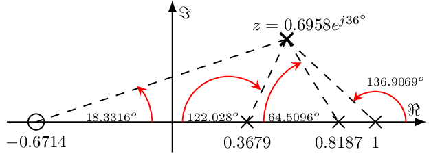

\documentclass{standalone}
\usepackage{tikz}
\usetikzlibrary{shapes.misc}
\begin{document}
\begin{tikzpicture}[scale=2.5, every node/.style={scale=0.6}]
% Axes:
\draw [-latex] (-0.815,0) -- (1.25,0) node [above left] {$\Re$};
\draw [-latex] (0,-0.15) -- (0,0.6) node [below right] {$\Im$};
% Poles and ticks
\node[cross out,draw=black] at (0.8187,0) {};
\node[] at (0.8187,-0.1) {$\tiny{0.8187}$};
\node[cross out,draw=black] at (0.3679,0) {};
\node[] at (0.3679,-0.1) {$\tiny{0.3679}$};
\node[cross out,draw=black] at (1,0) {};
\node[] at (1,-0.1) {$\tiny{1}$};
% Zeroes and ticks
\node[solid, circle,draw=black] at (-0.6714,0) {};
\node[] at (-0.6714,-0.1) {$\tiny{-0.6714}$};
%% Draw connection arrows
\draw[] (0,0) node[pos=0.8, above left] {}(36:0.6958) node[solid,thick, cross out,draw=black] {};
\node[] at (36:0.6958+0.14) {$\tiny{z=0.6958e^{j36^\circ}}$};
\draw[dashed] (36:0.6958) -- (-0.6714,0) node[] {};
\draw[dashed] (36:0.6958) -- (0.3679,0) node[] {};
\draw[dashed] (36:0.6958) -- (0.8187,0) node[] {};
\draw[dashed] (36:0.6958) -- (1,0) node[] {};
%% Draw angles for zeroes
\draw (-0.3,0.025)node[] {$\scriptstyle 18.3316^o$};
\draw[red, -stealth] (-0.1,0) arc (0:45:0.25);
%% Draw angles for poles
\draw (0.2,0.025)node[] {$\scriptstyle 122.028^o$};
\draw[red, -stealth] (0.05,0) arc (180:45:0.225);
\draw (0.6,0.025)node[] {$\scriptstyle 64.5096^o$};
\draw[red, -stealth] (0.45,0) arc (180:115.4904:0.325);
\draw (1.1,0.2)node[] {$\scriptstyle 136.9069^o$};
\draw[red, -stealth] (1.15,0) arc (0:136.9069:0.15);
%\draw[red, -stealth] (0,2) arc (90:145:2);
%\draw[dashed] (0,0) -- node[pos=0.8, above right] {$\omega_z$}(125:3.5) node[solid, fill=white, circle,draw=black] {};
%\draw[dashed] (0,0) -- node[pos=0.8, above right] {$\omega_z$}(125:3.5) node[solid, cross out,draw=black] {};
%\draw[dashed] (0,0) -- (125:3.5) node[solid, cross out,draw=black] {};
%\draw[black, -stealth] (1.75,0) node[pos=0.1,above right] {$\theta=120^o$} arc (0:125:1.75);
%
%%\draw[dashed] (-5,0) node[below left] {$-\xi_p\omega_p$} -- (-5,-3) node[solid, cross out,draw=black] {};
%%\draw[dashed] (-2,0) node[below left] {$-\xi_z\omega_z$} -- (-2,-3) node[solid, fill=white, circle,draw=black] {};
%%\draw[dashed] (-2,0) node[below left] {$-\xi$} -- (-2,2.85);
%%\draw[dashed] (0,2.85) node[below left] {$\omega_n$} -- (-2,2.85);
%\draw[dashed] (-2,0) node[below left] {$-2$} -- (-2,2.867);
%\draw[dashed] (0,2.867) node[below left] {$j2\sqrt{(3)}$} -- (-2,2.867);
%\draw[dashed] (125:3.5) -- (-4,0) node[solid, cross out,draw=black] {};
%\draw (-4,0) node [below left] {-4};
%\draw[black, -stealth] (-2,2) arc (0:-180:0.3);
%\draw (-3,2.25)node[] {$\theta=30^o$};
\end{tikzpicture}
\end{document}Created by David Li